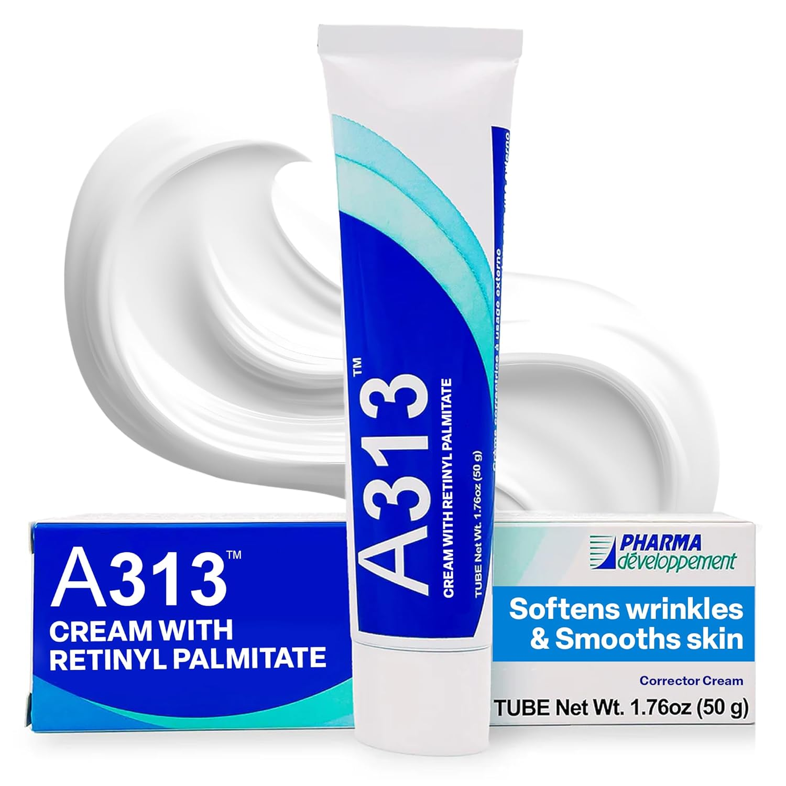

Perimenopause — the transitional phase leading up to menopause, typically beginning in the mid-40s but sometimes as early as the late 30s — is one of the most significant hormonal shifts a woman's body goes through. And while most of the conversation focuses on hot flashes, sleep disruption, and mood changes, what often catches women off guard is what happens to their skin.
The changes can feel sudden. Skin that was reliably oily becomes dry almost overnight. Products that worked for years stop working. Fine lines deepen faster than they did before. Skin that was never particularly sensitive becomes reactive. Dark spots appear or intensify. And sometimes, frustratingly, breakouts return — at an age when most women assumed that chapter was long closed.
None of this is random. It's all driven by the same hormonal shift. Understanding what's happening makes it significantly easier to respond to it intelligently.
What estrogen actually does for your skin
Estrogen is not just a reproductive hormone. It plays a fundamental role in skin health — and its decline during perimenopause has direct, measurable consequences for how skin looks, feels, and functions.
Collagen production
Estrogen stimulates fibroblasts — the cells responsible for producing collagen and elastin. During the perimenopausal transition, estrogen levels become increasingly erratic and eventually decline significantly. Research has shown that women lose approximately 30% of their skin's collagen in the first five years after menopause, with the rate of loss highest in the perimenopausal period. This accelerated collagen loss is why fine lines can seem to deepen rapidly during this time — it's not imagination, it's biology.
Skin thickness and density
Estrogen maintains skin thickness by supporting the extracellular matrix — the structural network of proteins that gives skin its density and resilience. As estrogen declines, the dermis thins, skin loses volume, and the structural support beneath fine lines weakens. This is why perimenopausal skin often looks less "plump" even when it's adequately hydrated.
Moisture retention
Estrogen stimulates the production of hyaluronic acid and glycosaminoglycans — the molecules responsible for holding water in skin tissue. Declining estrogen means declining water-binding capacity, which is why skin that was previously oily or combination often becomes noticeably drier during perimenopause.
A comprehensive review published in the International Journal of Women's Dermatology found that estrogen receptors are present throughout all layers of the skin. Estrogen deficiency is directly associated with decreased skin thickness, reduced collagen content, impaired wound healing, increased transepidermal water loss, and accelerated photoaging. The same review found that skin aging accelerates significantly during the perimenopausal transition — faster than at any other period in a woman's life.

A hydroquinone-free brightening treatment combining arbutin, niacinamide, and vitamin C to visibly reduce hyperpigmentation and uneven tone — one of the most common concerns during perimenopause. Targets dark spots at the source without the sensitivity of prescription hydroquinone.
The four skin changes to expect during perimenopause
Declining estrogen reduces natural moisturizing factors and ceramide production, compromising the skin barrier. Skin loses moisture faster, feels tighter, and becomes more reactive to products and environmental stressors that previously caused no issues.
The structural proteins that give skin its firmness and density decline significantly. Fine lines deepen, skin loses its "bounce," and the face may begin to look less volumized — particularly around the cheeks, jawline, and under-eye area.
A compromised barrier combined with hormonal fluctuations makes skin more reactive. Products tolerated for years may suddenly cause irritation. Redness, flushing, and sensitivity to temperature, fragrance, and active ingredients all increase.
Fluctuating estrogen levels affect melanin production, making skin more susceptible to hyperpigmentation — both from sun exposure and from post-inflammatory responses. Existing dark spots may intensify and new ones appear more readily.
How to adjust your routine for perimenopausal skin
The good news is that the same ingredients that have always driven results in skincare — retinoids, antioxidants, peptides, barrier-supporting ceramides — remain highly effective during perimenopause. What changes is how you use them, how you sequence them, and how much emphasis you place on barrier support.
Prioritize barrier repair above everything else
A compromised barrier is the root cause of most perimenopausal skin complaints — dryness, sensitivity, reactivity, and accelerated aging all trace back to it. Before adding actives, ensure your barrier is supported with ceramides, fatty acids, and humectants. A disrupted barrier will make every active ingredient you apply more irritating and less effective.
Switch to a gentler retinoid or introduce one if you haven't
Retinoids remain the most clinically validated anti-aging ingredient available — and they're arguably more important during perimenopause than at any other time, given the rate of collagen loss. But perimenopausal skin is often more sensitive, so the approach matters. If you've been using a high-strength retinol, consider stepping down temporarily while your barrier adjusts. If you haven't started retinoids yet, now is the time — starting gently and building slowly. And because fluctuating estrogen increases hyperpigmentation risk, consistent daily SPF becomes non-negotiable.
Amplify antioxidant protection
Perimenopausal skin has reduced antioxidant capacity — it generates more free radicals and has fewer resources to neutralize them. Vitamin C in the morning is more important than ever, providing both antioxidant protection and stimulating the collagen synthesis that declining estrogen is undermining.
Add targeted repair ingredients
Peptides, growth factors, and DNA repair technology become especially valuable during perimenopause — they directly address the collagen loss and cellular aging that estrogen was previously helping to manage. This is the phase of life where these ingredients earn their price tags. See the PM routine guide for how to layer them correctly at night.
Perimenopause doesn't mean your skin is beyond help. It means your skin has different needs — and meeting them requires understanding what changed and why.
The products worth adding to a perimenopausal routine
These are the specific formulas that address the four key changes perimenopausal skin goes through — chosen for their clinical evidence, ingredient integrity, and real-world results for women in this life stage.

15% L-ascorbic acid combined with ferulic acid and vitamin E — the triple antioxidant combination with the strongest evidence for collagen stimulation and photoprotection. Apply every morning to counter the antioxidant deficit that comes with declining estrogen.

Johns Hopkins-developed DNAzyme technology that targets DNA damage at the cellular level — the root cause of accelerated aging during perimenopause. One of the most scientifically rigorous anti-aging serums available. For women who want to address aging at the source, not just the surface.

Specifically formulated for reactive and sensitized skin, the Calm Serum uses the same DNAzyme platform to repair cellular damage while actively reducing inflammation and redness. The ideal choice for perimenopausal skin experiencing increased sensitivity alongside aging concerns.

A physician-developed overnight cream combining a retinoid with an AHA in a single conjugated molecule — delivering the collagen-stimulating power of retinol with significantly less irritation than traditional retinoids. Ideal for perimenopausal skin that needs strong actives but can't tolerate the classic retinoid adjustment period.

The French pharmacy retinoid that's gentle enough for even the most sensitive perimenopausal skin. Retinyl palmitate delivers retinoid benefits at a slower, more tolerable pace — making it the ideal starting point for women new to retinoids, or a gentler alternative on nights when skin needs recovery rather than stimulation.
The bottom line
Perimenopause is not a skincare emergency — but it is a signal that your routine needs to evolve. The hormonal changes happening beneath the surface are real, measurable, and consequential for your skin. Ignoring them and continuing with the same products you used in your 30s will produce diminishing returns. Responding to them intelligently — with the right actives, the right barrier support, and the right expectations — produces genuinely meaningful results.
Your skin during perimenopause is not damaged or broken. It's operating under a new hormonal reality. Give it the ingredients it needs to work with that reality rather than against it, and it will respond.
Disclaimer: I am not a medical professional or licensed dermatologist. This content reflects personal research and is not intended as medical advice. Please consult a qualified healthcare provider or dermatologist regarding hormonal changes and their effect on your skin.